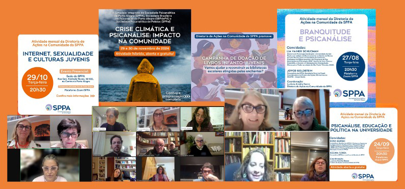

Nova diretoria e apoio psicológico às vítimas das enchentes
- 
 DAC promoveu ciclo de estudos para ajudar os psicanalistas a lidar com as demandas emocionais resultantes das situações de catástrofe
DAC promoveu ciclo de estudos para ajudar os psicanalistas a lidar com as demandas emocionais resultantes das situações de catástrofe
A Sociedade Psicanalítica de Porto Alegre (SPPA) está ampliando suas atividades com a criação da Diretoria de Ações na Comunidade (DAC).
Em resposta às recentes enchentes que devastaram a região sul do Brasil, a SPPA está oferecendo suporte psicológico às vítimas através de uma série de iniciativas que incluem atendimentos online gratuitos, visitas a abrigos temporários e participação em campanhas de coleta de livros, após a perda de 80 mil volumes das bibliotecas escolares do estado.
Uma das principais ações é o atendimento online gratuito, no qual psicanalistas voluntários oferecem acolhimento emocional às pessoas afetadas pelas enchentes. A medida permite que o suporte seja prestado mesmo à distância, alcançando um maior número de necessitados. Paralelamente a isto, a SPPA realiza visitas aos abrigos temporários, proporcionando conforto e apoio psicológico diretamente aos desabrigados.
Para capacitar os psicanalistas a lidar com as demandas emocionais resultantes das crises, a DAC está promovendo um ciclo de estudos online com convidados, "A Psicanálise no enlace social: trabalho com grupos”, destacando a presença de Pablo Castanho, que agregou e ajudou muito com seus conhecimentos sobre situações de catástrofe. Essas atividades visam preparar os profissionais para atender tanto indivíduos quanto grupos em situações de emergência.
Além disso, a atividade inaugural da Diretoria de Ações na Comunidade (DAC), intitulada "A escuta psicanalítica na comunidade: alcances e limites", contou com a presença de Josiane Barbosa Oliveira (SBPRP), Diretora de Comunidade e Cultura da FEBRAPSI, e Alice Becker Lewkowicz (SPPA), psicanalista e participante do Grupo Rodaviva-SPPA. A coordenação foi feita por Luciana Aranha Secco, Diretora de Ações na Comunidade da SPPA.
Em parceria, a DAC e a DIA organizaram a atividade conjunta "E nossas crianças e adolescentes vivendo a catástrofe?", que teve como convidada Mónica Cardenal, psicanalista, membro em função didática da Associação Psicanalítica de Buenos Aires, Chair do Comitê da IPA sobre Assistência Psicanalítica em Crises e Emergências (PACE) e consultora do Comitê da IPA de Psicanálise de Crianças e Adolescentes. O comentário foi feito por Maria Elisabeth Cimenti, psicóloga e psicanalista da SPPA especializada em infância e adolescência, e coordenadora do Grupo PESCAR. A coordenação ficou a cargo de Nazur Aragonez de Vasconcellos, Diretor da Infância e Adolescência da SPPA.
Durante o Simpósio dos Candidatos, foram apresentados trabalhos de grupos atuantes há mais de 18 anos, como as Rodas de Conversa SMED-SPPA, o atual grupo Rodaviva-SPPA e o Projeto PESCAR-SPPA, que focam temas como violência e adolescência. Outro destaque na agenda da SPPA é a parceria com o SOS Brasil, uma iniciativa que apoia vítimas de crises e desastres.
A criação do Comitê de Estudos e Intervenções Psicanalíticas em Situações de Crise e Catástrofe reflete o compromisso da SPPA em coordenar ações eficazes e preparar a organização para futuras crises. A psicanálise brasileira, ao ser levada além dos consultórios para a população vulnerabilizada, demonstra sua integração no enfrentamento dessas tragédias.
Inspirada pelo psicanalista francês René Kaës, a DAC acredita que “o estojo e o conteúdo da nossa formação” possam ser levados para além dos consultórios. Essa visão reforça a importância do engajamento ativo e prático na construção de uma sociedade mais justa e solidária.
A DAC convida todos os interessados a participar dessa expansão. “Juntos, podemos fazer a diferença na vida das pessoas afetadas pelas enchentes, contribuindo significativamente para a reconstrução de suas vidas e para a criação de um futuro mais solidário e inclusivo”, salienta a diretora da DAC, Luciana Aranha Secco.